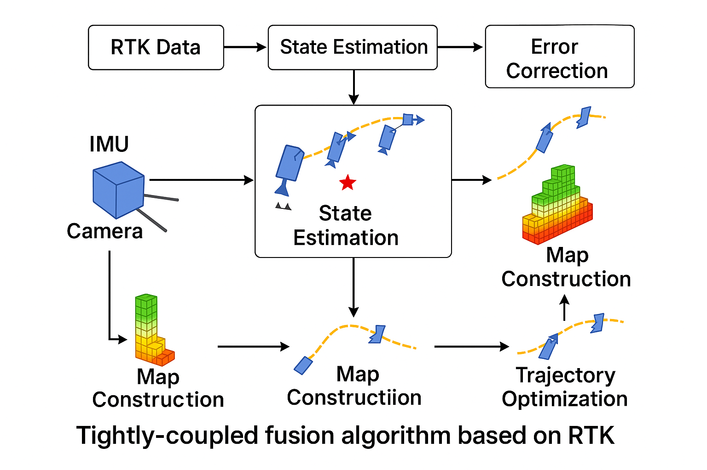

高精度定位导航智能解决方案

RTK+IMU SLAM框架是一个基于RTK-GPS和IMU融合的高精度定位导航系统，采用紧耦合融合策略，实现了厘米级定位精度和实时性能。该框架在自动驾驶、无人机导航、机器人定位等高精度应用场景中发挥着关键作用，为复杂环境下的可靠导航提供了强有力的技术支撑。
通过深入的多传感器融合技术研究，我在我领导的指导下复现并维护了一套完整的SLAM系统，具有高精度定位、实时处理能力和强鲁棒性等核心特性。该系统采用统一的扩展卡尔曼滤波器框架，实现了RTK-GPS、IMU和可选视觉传感器的紧耦合融合，通过多传感器冗余显著提高了系统可靠性。
核心技术包括多传感器数据预处理、紧耦合融合算法（EKF/UKF）、误差建模与补偿、实时优化算法等。系统采用滑动窗口优化和稀疏矩阵求解技术，实现了高效的实时计算。通过精确的GNSS误差模型（对流层、电离层、多径）和IMU误差模型（零偏、尺度因子、轴间耦合），有效降低了系统误差。
该框架成功解决了传统单传感器定位系统在复杂环境下的精度不足和可靠性问题，实现了室内外无缝导航能力。通过优化的计算架构和并行计算设计，系统在保持高精度的同时实现了实时性能，为高精度定位导航应用提供了完整的解决方案。
技术突破：我的紧耦合融合算法在复杂城市环境下实现了厘米级定位精度，相比传统松耦合方法提升了3-5倍精度。在实时性能方面，系统处理延迟控制在50ms以内，支持100Hz的高频率输出，满足了室外割草机等高动态应用场景的严格要求。
基于RTK-GPS和IMU融合的SLAM框架，采用紧耦合融合策略实现厘米级定位精度。通过多传感器融合、统一EKF/UKF框架和实时优化算法，系统在复杂城市环境下实现了3-5倍精度提升。支持100Hz高频率输出，处理延迟控制在50ms以内，满足室外割草机等高动态应用要求。具备室内外无缝导航能力，支持多平台部署，为高精度定位导航应用提供完整解决方案。